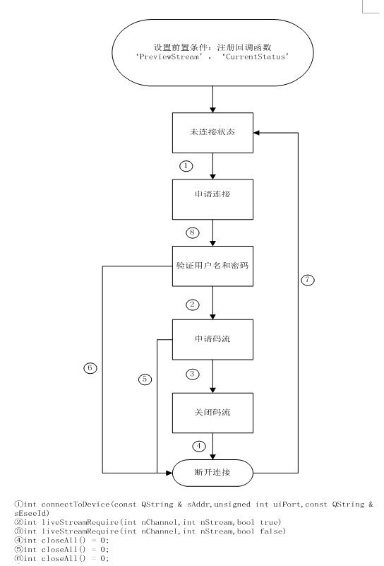
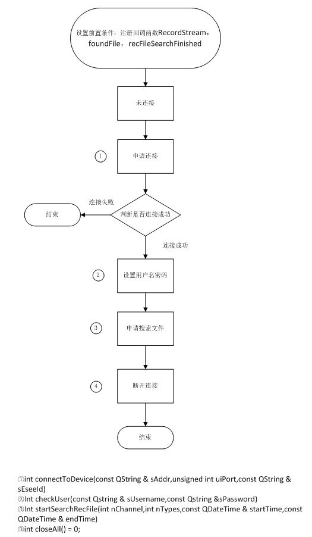
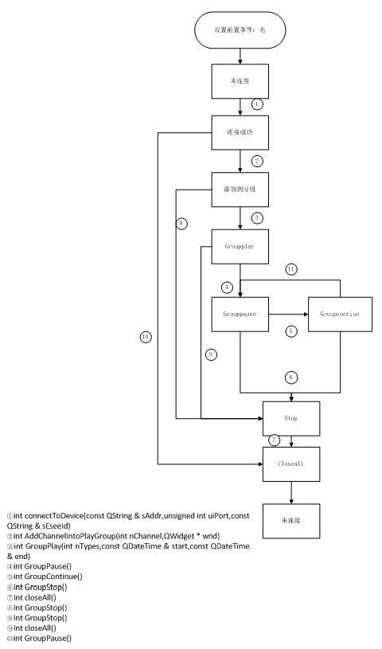

编辑人：冯明创
编辑日期：2013/12/25
模块简介：
//模块名称：封装DVR设备模块
//模块功能：封装DVR设备的预览和回放功能
接口说明：
// 简述：连接到设备，参数sAddress和uiPort用于ip直连（bubble协议连接）；sEseeId参数用于穿透和转发；连接过程阻塞
//输入参数：
// sAddress:设备ip地址
// uiPort:设备端口
// sEseeId:设备id
// 返回值:
// 0:连接成功
// 1:连接失败
int connectToDevice(const QString & sAddr,unsigned int uiPort,const QString & sEseeId)
// 简述：校验用户名密码
//输入参数：
// sUsername:用户名
// sPassword:密码
// 返回值:
// 0:校验成功
// 1:校验失败
int checkUser(const QString & sUsername,const QString & sPassword)
// 简述：设置当前所连接通道的名称
//输入参数：
// sChannelName:通道名称
// 返回值:
// 0:设置成功
// 1:设置失败
int setChannelName(const QString & sChannelName)
// 简述：请求实时码流
//输入参数：
// nChannel:通道号
// nStream:码流编号
// bOpen:为true时打开通道预览，为false时，关闭通道预览
// 返回值:
// 0:请求成功
// 1:请求失败
int liveStreamRequire(int nChannel,int nStream,bool bOpen)
// 简述：关闭连接，并清理资源
// 返回值:
// 0:关闭成功
// 1:关闭失败
int closeAll()
// 简述：获取当前组件的Vendor名称
//返回值：
// JUAN DVR
// JUAN IPC
// ONVIF
QString getVendor()
// 简述：获取当前的连接状态
// 返回值:
// 0:已连接
// 1:正在连接
// 2:断开连接
// 3:正在断开连接
int getConnectStatus()
// 简述：开始搜索录像文件
//输入参数：
// nChannel:最低位为0通道，最高位为31通道，每一位表示一个通道
// nTypes:录像类型，按位计算，第0位表示定时录像，第1位表示移动侦测录像，第2位表示报警录像，第3位表示手动录像
// startTime:开始时间
// endTime:结束时间
// 返回值:
// 0:调用成功
// 1:调用失败
// 2:参数错误
int startSearchRecFile(int nChannel,int nTypes,const QDateTime & startTime,const QDateTime & endTime)
// 简述：将通道添加到同步组，并且指定通道nChannel在窗口wnd内播放
//输入参数：
// nChannel：需要添加进同步组的通道号
// wnd：播放的窗口
// 返回值:
// 0:添加成功
// 1:添加失败
int AddChannelIntoPlayGroup(int nChannel,QWidget * wnd)
// 简述：启动回放
//输入参数：
// nTypes:录像类型，按位计算，第0位表示定时录像，第1位表示移动侦测录像，第2位表示报警录像，第3位表示手动录像
// startTime:开始时间
// endTime:结束时间
// 返回值:
// 0:调用成功
// 1:连接中断
// 2:参数错误
int GroupPlay(int nTypes,const QDateTime & start,const QDateTime & end)
// 简述：获取当前播放时间点
QDateTime GroupGetPlayedTime()
//简述：暂停播放
int GroupPause()
//简述： 继续播放
int GroupContinue()
//简述： 停止播放
int GroupStop()
//简述： 开启/关闭音频
//输入参数：
// bEnable：true时开启音频，false时关闭音频
//简述：返回值：
// 返回之前的音频开关状态
bool GroupEnableAudio(bool bEnable)
//简述：快放
//
int GroupSpeedFast()
//简述：慢放
//调用n次，播放速度为正常播放速度1/n倍
int GroupSpeedSlow()
//简述： 恢复正常速度播放
int GroupSpeedNormal()
=====================事件注册接口==========================
//简述：获取 可注册的事件名称
//返回 可注册的事件名称列表
QStringList eventList()
//查询 事件参数
//输入参数：
// eventName：事件名称
// eventParams：获取事件参数的列表
//返回值：
// 0：OK
// 1：E_EVENT_NOT_SUPPORT
// 2：E_INVALID_PARAM
int queryEvent(QString eventName,QStringList &eventParams)
//简述：注册事件回调函数
//输入参数：
// eventName：事件名称
// (__cdecl *proc)(QString,QVariantMap,void *)：回调函数
// *pUser：回调函数this指针
int registerEvent(QString eventName,int (__cdecl *proc)(QString,QVariantMap,void *),void *pUser)
回调事件与参数：
// Event
// @1 name:"PreviewStream"
//abstract:
// 获取到设备的预览码流信息
// parameters：
// "channel":当前帧的通道号
// "pts":当前帧时间戳，单位为微秒
// "length":数据长度
// "data":数据指针
// "frametype":帧类型，取值'I','P','B','A'
// "width":视频帧的宽，单位像素，如果是音频帧，不传递该参数
// "height":视频帧的高，单位像素，如果是音频帧，不传递该参数
// "vcodec":视频帧的编码格式，当前定义值:"H264"，如果是音频帧，不传递该参数
// "samplerate":音频采样率，如果是视频帧，不传递该参数
// "samplewidth":音频采样位宽，如果是视频帧，不传递该参数
// "audiochannel":音频的采样通道数，如果是视频帧，不传递该参数
// "acodec":音频编码格式，当前定义值："G711"，如果是视频帧，不传递该参数
// @2 name:"RecordStream"
//abstract:
// 获取到设备的回放码流信息
// parameters:
// "channel":当前帧的通道号
// "pts":当前帧时间戳，单位为微秒
// "length":数据长度
// "data":数据指针
// "frametype":帧类型，取值'I','P','B','A'
// "width":视频帧的宽，单位像素，如果是音频帧，不传递该参数
// "height":视频帧的高，单位像素，如果是音频帧，不传递该参数
// "vcodec":视频帧的编码格式，当前定义值:"H264"，如果是音频帧，不传递该参数
// "samplerate":音频采样率，如果是视频帧，不传递该参数
// "samplewidth":音频采样位宽，如果是视频帧，不传递该参数
// "audiochannel":音频的采样通道数，如果是视频帧，不传递该参数
// "acodec":音频编码格式，当前定义值："G711"，如果是视频帧，不传递该参数
//@3 name:"CurrentStatus"
//abstacts:
// 获取当前设备的状态信息
//parameters:
// "CurrentStatus":当前状态
// @4 name "foundFile"
//abstacts:
// 获取当前设备录像信息
// parameters:
// "channel":录像所属的通道号
// "types":录像类型，按位计算，第0位表示定时录像，第1位表示移动侦测录像，第2位表示报警录像，第3位表示手动录像
// "start":录像开始时间，格式为"YYYY-MM-DD hh:mm:ss"
// "end":录像结束时间，格式为"YYYY-MM-DD hh:mm:ss"
// "filename":录像的文件名
//
// @5 name "recFileSearchFinished"
//abstracts:
// 获取当前设备录像的记录条目数
// parameters:
// "total":总共的录像记录条目数
接口调用时序：
//@1 预览功能

//@2 搜索回放录像索引

//@3回放功能
